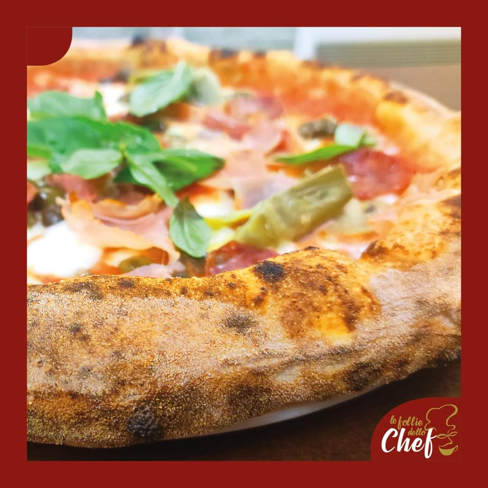
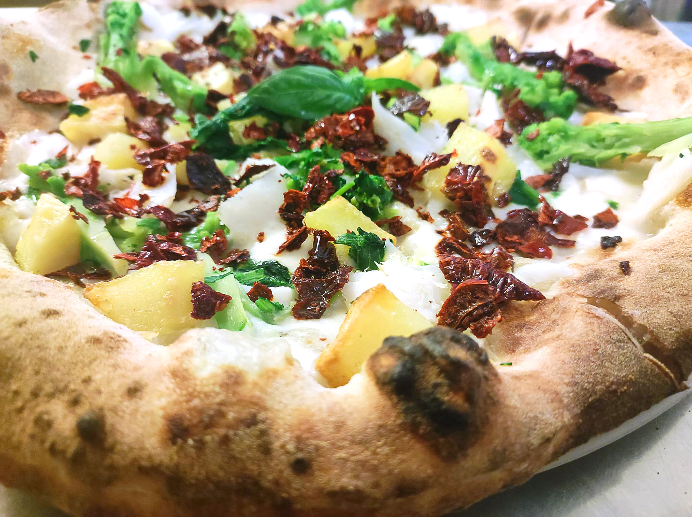
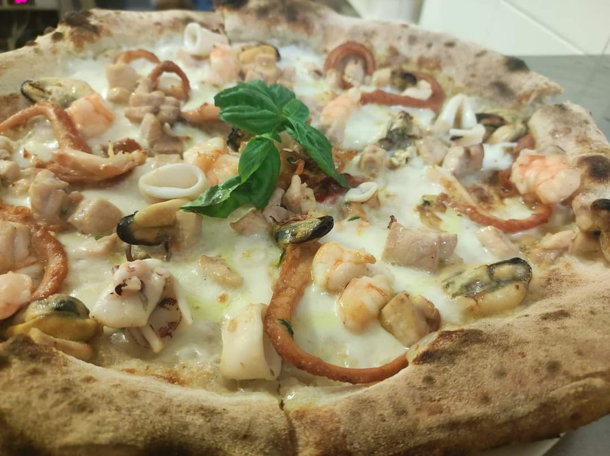

Pizzeria Menu
Le Rosse e Le Bianche
Pizza Margherita
€4.50
Pomodoro San Marzano Dop, fior di latte e basilico
Pizza Marinara
€4.00
Pomodoro San Marzano Dop, aglio ed origano
Pizza Diavola
€7.00
Pomodoro San Marzano Dop, fior di latte e salame piccante
Pizza 4 Stagioni
€7.50
Pomodoro San Marzano Dop, fior di latte, prosciutto cotto, funghi, carciofi ed olive taggiasche
Calzone
€8.00
Pomodoro San Marzano Dop, fior di latte, prosciutto cotto, funghi
Pizza Americana
€7.50
Pomodoro San Marzano Dop, fior di latte, prosciutto cotto e patate fritte*
Pizza Capricciosa
€8.00
Pomodoro San Marzano Dop, fior di latte, funghi, carciofi, prosciutto cotto, salame ed olive taggiasche
Crudaiola
€8.00
Fior di latte, prosciutto crudo, pomodorini, rucola e scaglie di grana
4 Formaggi
€7.50
Fior di latte, grana padano, gorgonzola e taleggio
“Friarielli”
€7.50
Fior di latte, salsiccia lucana e “friarielli”

Le Follie
Pizzachef
€8.00
Mozzarella di bufala, datterino giallo, melanzane e zucchine saltate, scaglie di grana e glassa balsamica
Le Follie
€9.00
Pizza pane, rucola, pomodorini rossi, burratina e girello marinato
Delicata
€8.00
Datterino giallo, ricotta di bufala, pancetta coppata e provola
Girasole
€8.00
Fiordilatte, crema di pomodorini gialli e zafferano, salsiccia lucana e speck
Sapori d’autunno
€8.00
Fior di latte, salsiccia lucana, funghi porcini e crema di zucca
Violet
€8.00
Fior di latte, provola, patata viola, pomodorini gialli e rape
Sottobosco
€8.00
Pomodoro San Marzano Dop, fior di latte, asparagi e funghi porcini
Sfiziosa
€7.50
Mozzarella di bufala, crema di melanzane, pomodori secchi e scaglie di grana
Potentina
€8.00
Mozzarella di bufala, salsiccia, patate al forno, peperoni cruschi
Pizza La Costiera
€7.00
Fior di Latte, pomodorini gialli, acciughe e rosmarino
Pizza Cynara
€7.00
Mozzarella di bufala, crema di carciofi, melanzana e pancetta
Pizza alla crema di tartufo nero
€10.00
Mozzarella di bufala, crema di tartufo nero, funghi porcini e asparagi
Pizza al baccalà
€11.00
Fior di latte, baccalà, friarelli, patate al forno e peperoni cruschi
Pizza brigante
€8.00
Pomodoro, Mozzarella di bufala, salame, olive taggiasche

Le Pizze del Venerdì
Sinfonia di mare
€13.00
Fior di latte, patata viola, pomodorino giallo, calamari e gamberi
Salmone e gamberetti
€13.00
Mozzarella di bufala, salmone, gamberetti, rucola e limone a fette
Mareterra
€12.00
Fior di latte, crema di tartufo, salmone e burratina
